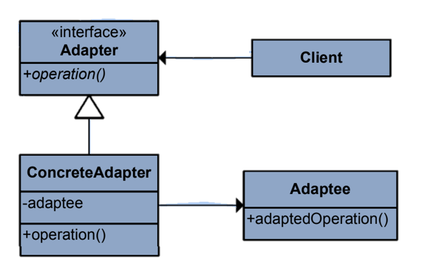

The Adapter pattern is a design pattern in software engineering that allows incompatible interfaces to work together. It acts as a bridge between two incompatible interfaces, allowing objects with different interfaces to collaborate. This pattern is used when you want to reuse an existing class with an interface that another class or system expects, without modifying the source code of either.Learn more.
Key Characteristics
Key characteristics of the Adapter pattern include:
Compatibility: The Adapter pattern allows objects with different interfaces to work together by providing an intermediary that translates between the two.
Wrapper: The adapter acts as a wrapper around the existing class, allowing it to be used in contexts where its original interface is not suitable.
Two Types: There are two main types of adapters:
Class Adapter: Uses multiple inheritance to adapt one interface to another. It inherits the source class and also implements the target interface.
Object AdapterUses composition to hold an instance of the source class while implementing the target interface.
Transparency: The client code that uses the adapted class isn't aware of the adaptation taking place; it interacts with the adapted interface as if it's the original.
Reusability: The Adapter pattern allows you to reuse existing classes that might not have the desired interface without modifying their code.
Class Diagram

Example
Imagine you have a legacy system that uses an older logging mechanism with methods like logInfo, logWarning, and logError. However, you want to integrate a modern logging library that uses methods like info, warning, and error. You can use the Adapter pattern to create an adapter that allows the legacy logging system to work seamlessly with the new logging library.